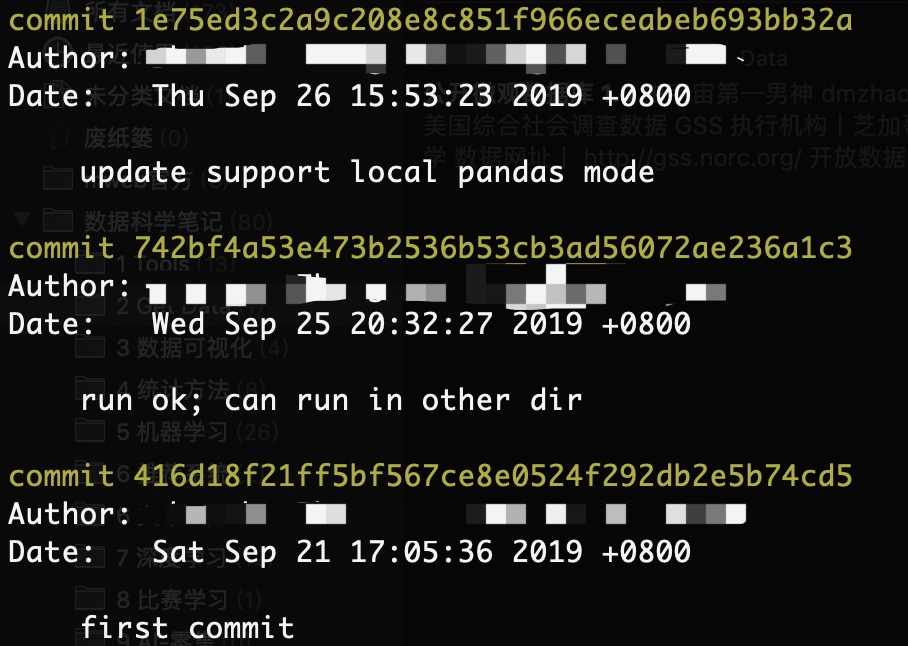

所属 Topic：数据科学工作流 · 类型：工具
git#
git 是一个版本管理的工具，能够非常方便的对项目进行版本控制。
1 建立自己的代码库#
假设你的用户名是zzz
（1）生成公钥
ssh-keygen -t rsa -f ~/.ssh/id_rsa.zzz
cat ~/.ssh/id_rsa.zzz.pub 保存到icode或者是自己的github上
（2）clone
git clone xxxxx代码库 # 将代码库克隆到本地
## 如果机器是多个人使用的话用--local,如果是自己一个人的话可以设置成--global
git config --local user.email zzz邮箱
git config --local user.name zzz用户名
git push origin master:refs/for/master
2 基本操作#
当我们新增或者更新了一个文件后，如何上传到代码库
git add xxx
git commit -m '注释'
git push origin HEAD:refs/for/master
从代码库将新代码下载到本地，更新本地库
git pull
3.常用操作#
还原文件到之前的某个版本#
当发现新提交的版本有问题，想回退到之前的某个版本的之后，可以进行如下操作。git log
比如我想修改自己写的这个utils.py 代码
git log utils.py
## 可以看到一共提交了3次，假设喔想回退到9.25提交的那个版本
git checkout 742bf4a53e473b2536b53cb3ad56072ae236a1c3 utils.py
git commit -m "revert to previous version"

查看git的整体配置#
git config --global --edit
repo中含有子模块的#
git pull --recurse-submodules
git分支#
新建分支
git checkout -b v1
删除分支
Git-命令行-删除本地和远程分支
切换到要操作的项目文件夹命令行: $ cd <ProjectPath>
查看项目的分支们(包括本地和远程) ...
删除本地分支命令行: $ git branch -d <BranchName>
删除远程分支命令行: $ git push origin --delete <BranchName>
对比不同分支的diff#
Git diff branch1 branch2 --stat //显示出所有有差异的文件列表
Git diff branch1 branch2 文件名(带路径) //显示指定文件的详细差异
Git diff branch1 branch2 //显示出所有有差异的文件的详细差异
合并不同远程的code#
https://zhuanlan.zhihu.com/p/346218679
##git clone git@example.com:/home/git/user_profile.git
## 在主git下,增加另一个远程
git remote add yl git@example.com:/home/git/user_profile.git
git fetch yl
## 在本地创建lcoal分支并拉取yl代码到local，自动切换到local, 这里我的local分支命名为了yl
git checkout -b yl yl/master
## 合并代码
git checkut master
git merge yl # 这个时候会报错 fatal: refusing to merge unrelated histories
## merge问题修复
## 出现原因是因为两个分支没有取得联系，在操作命令后面加
git merge yl --allow-unrelated-histories # 需要处理下冲突
git add
git commit -m "提交日志"
git 目录大小过大#
本身代码很少，但是现实空间却很大，.git/objects/pack 文件过大，可能是由于开发过程中上传过大文件，虽然现已删除，但仍然保存着git记录中。
## 查找大文件
git rev-list --objects --all | grep "$(git verify-pack -v .git/objects/pack/*.idx | sort -k 3 -n | tail -5 | awk '{print$1}')"
## 删除文件
git filter-branch --force --prune-empty --index-filter 'git rm -rf --cached --ignore-unmatch 要删除后的文件夹' --tag-name-filter cat -- --all
##
git push --force --all
### 如果以上方式不生效，就重建一个项目